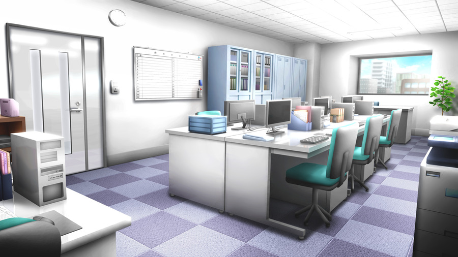
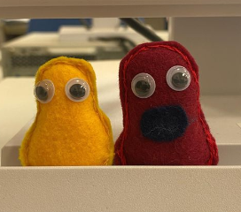

はじめに
皆さん、こんにちは！
盛岡情報ビジネス専門学校の金野勇太郎です。
今回は、HTMLの課題ということで、お題目に沿った内容で取りまとめさせていただきました。
今は絶賛TOPページを書いている真っ最中何ですけれでも・・・
まあなんといっても書くことがない！
とりあえず目次を貼っておきます。
- ITの歴史
- 気になる企業
- 気になったニュース/出来事
- 自己紹介ページ
～目次～
今や私たちの日常生活に欠かせない「IT技術」。それがどのような進化を
遂げてきたかをまとめました。
関連記事：
そもそもITって何？

お待たせしました。お待たせしすぎたかもしれません。 これを見れば君もキンノマスターだ！
大正こそこそうわさ話（左の写真について）
あれは高校三年生の夏・・・ 保育の実習で子供に対する読み聞かせ絵本を班ごとに作ろうってことになったんだけど、 一人一人作るものを決めていくわけよ。 僕はカビルンルンを作ることになったんだけど、 頑張って作ったのに要らないっていわれちゃったんだよね。 頑張って作ったのにね。
